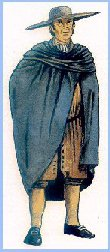

El motín de Esquilache
Se conoce con este nombre la insurrección del pueblo de Madrid contra el ministro de Carlos III, el Marqués de Esquilache. Duró del 23 al 26 de Marzo de 1766 y su causa fue una disposición real que obligaba a todo el mundo a que dejase la capa larga y el sombrero redondo y bajo y adoptase la capa corta y el sombrero de tres picos. Pero los historiadores consideran que el motín de Esquilache fue la amenaza más grande a la autoridad monárquica en Castilla desde la Guerra de las Comunidades en 1520.
El autor de la disposición decía que las prendas que se prohibían daban a los españoles un aire poco culto y un aspecto sospechoso. El disgusto que causó esta disposición se manifestó muy pronto: aquella misma noche fueron arrancados todos los carteles de las esquinas y a la mañana siguiente apareció un cartel amenazando al ministro y diciendo que había más de 3,000 hombres dispuestos a levantarse. Hubo choques entre el pueblo y la guardia flamenca, algunos de cuyos miembros fueron asesinados ante la pasividad de la guardia española.
Carlos III renunció a emplear la fuerza armada y frente gritos de "¡Viva el Rey! ¡Muera Esquilache!", desde un balcón de palacio, concedió al pueblo cuanto pedía: destierro de Esquilache, supresión de la guardia flamenca, rebaja de los comestibles, abolición de las medidas sobre los vestidos y amnistía para los que habían intervenido en los sucesos. La noticia de que en Madrid había triunfado un motín se extendió rápidamente a otras ciudades y provincias, provocando más disturbios, aunque fuera de Madrid la motivación política no fue tan clara y predominaron las demandas populares.